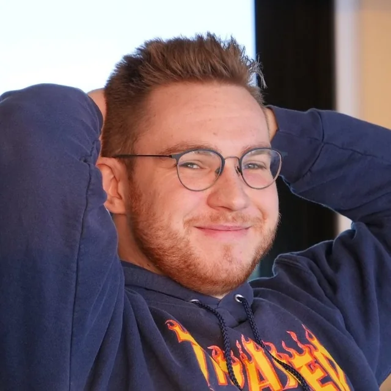

Ohnepixel, vlastním jménem Mark Zimmermann, je německý streamer a tvůrce obsahu zaměřený hlavně na Counter-Strike 2 content. Nejvíce se proslavil svými znalostmi o herních skinech, jejich hodnotě, raritě a obchodování. Na svých streamech často hodnotí inventáře hráčů, sleduje profesionální zápasy a diskutuje o vývoji trhu se skiny. Díky svému energickému vystupování patří mezi nejznámější osobnosti Counter-Strike komunity.

| Otázka | Odpověď |
|---|---|
| Jak se Ohnepixel jmenuje? | Mark Zimmermann |
| Kdy a kde se Ohnepixel narodil? | 11.5. 1990, Německý Lüneburg |
| Kdy začal Ohnepixel streamovat na Twitchi? | 2020 |
| Kolik má Ohnepixel followerů na Twitchi? | přibližně 2.6 milionů |
| Jaký je Ohnepixelův nejdražší CS2 skin? | Souvenir AWP | Dragon Lore (Field-Tested) - cena okolo 900000Kč |
| Jaký je Ohnepixelův největší úspěch? | Výherce ceny Streamer of the Year v letech 2023, 2024 a 2025 |